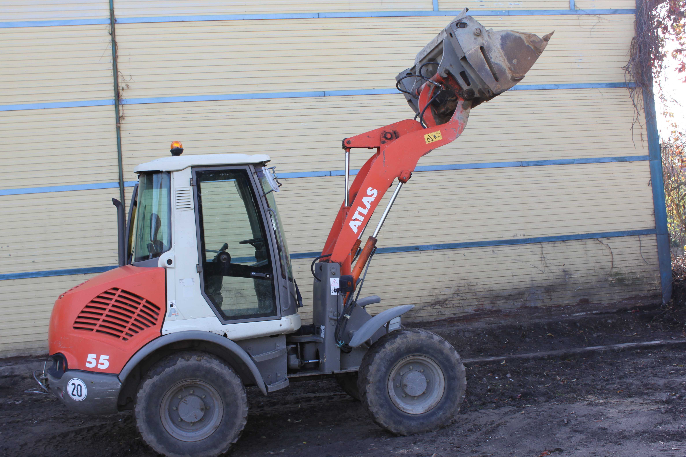
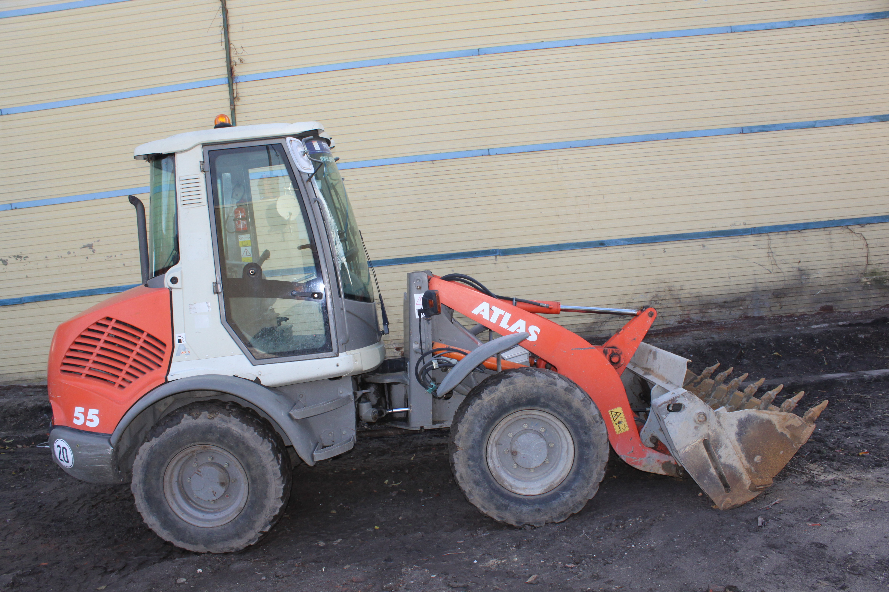

Jesteśmy w stanie zapewnić Państwu szeroki zakres usług budowlanych przy kostce brukowej, między innymi :
- Niwelacja terenu - Układanie kostki brukowej - Odwodnienia wokół posesji - Roboty ziemne - Zagęszczanie terenu - Usługi koparko-ładowarką Oferowane przez naszą firmę usługi są wszechstronne. Jeżeli chodzi o projektowanie, zagospodarowanie przestrzeni, jesteśmy w stanie udzielić fachowej porady a także zrobić wstępny zarys od ręki. Gwarantujemy że doświadczenie jakie posiadamy a wasza wizja może być początkiem stworzenia waszej przydomowej oazy przy naszej pomocy. Wszystkie nasze prace związane z układaniem kostki wiążą się z ustabilizowaniem terenu ( nie używamy żadnych mączek pochodnio granitowych), lecz wszystkie nasze podsypki pod daną kostkę są mieszane z cementem, dzięki temu tworzą one stabilną całość.

